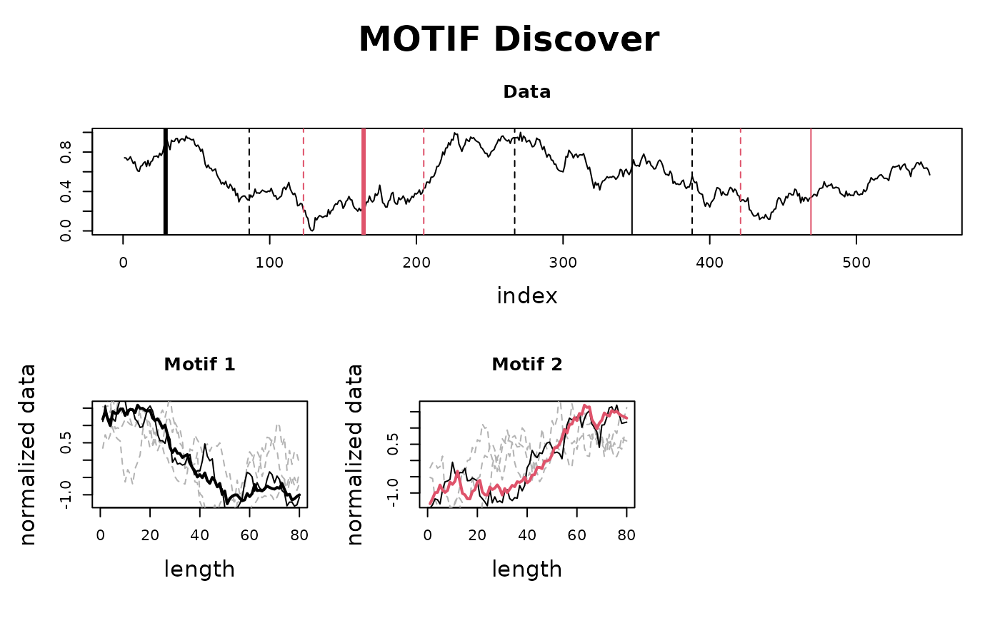
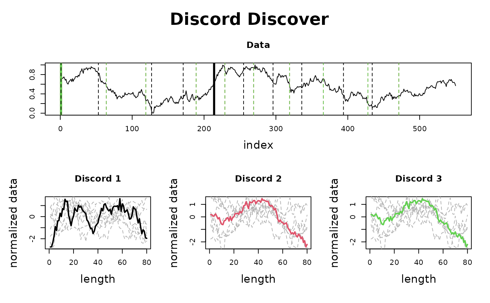

The goal of this function is to compute all fundamental algorithms on the provided time series data. See details for more information.
analyze(
ts,
windows = NULL,
query = NULL,
sample_pct = 1,
threshold = 0.98,
n_jobs = 1L
)a matrix or a vector. The time series to analyze.
an int or a vector. The window(s) to compute the Matrix Profile. Note that it may be an int
for a single matrix profile computation or a vector of int for computing the Pan-Matrix Profile.
a matrix or a vector. Optional The query to analyze. Note that when computing the Pan-Matrix Profile
the query is ignored!
a numeric. A number between 0 and 1 representing how many samples to compute for
the Matrix Profile or Pan-Matrix Profile. When it is 1, the exact algorithm is used. (default is 1.0).
a numeric. Correlation threshold. See details. (Default is 0.98).
an int. The number of cpu cores to use when computing the MatrixProfile. (default is 1).
The appropriate Matrix Profile or Pan-Matrix Profile profile object and also plots the graphics.
For now the following is computed:
Matrix Profile - exact or approximate based on sample_pct given that a single windows is provided. By default
is the exact algorithm;
Top 3 Motifs;
Top 3 Discords;
Plot Matrix Profile, Motifs and Discords.
When windows is not provided or more than a single window is provided,
the Pan-Matrix Profile is computed:
Compute the upper bound when a threshold is provided (it is, by default);
Compute Pan-Matrix Profile for all windows provided, below the upper bound, or a default range when no windows
is provided;
Top Motifs;
Top Discords;
Plot Pan-Matrix Profile, motifs and discords.
# Matrix Profile
result <- analyze(mp_toy_data$data[, 1], 80)


if (FALSE) {
# Pan Matrix Profile
result <- analyze(mp_toy_data$data[, 1])
}